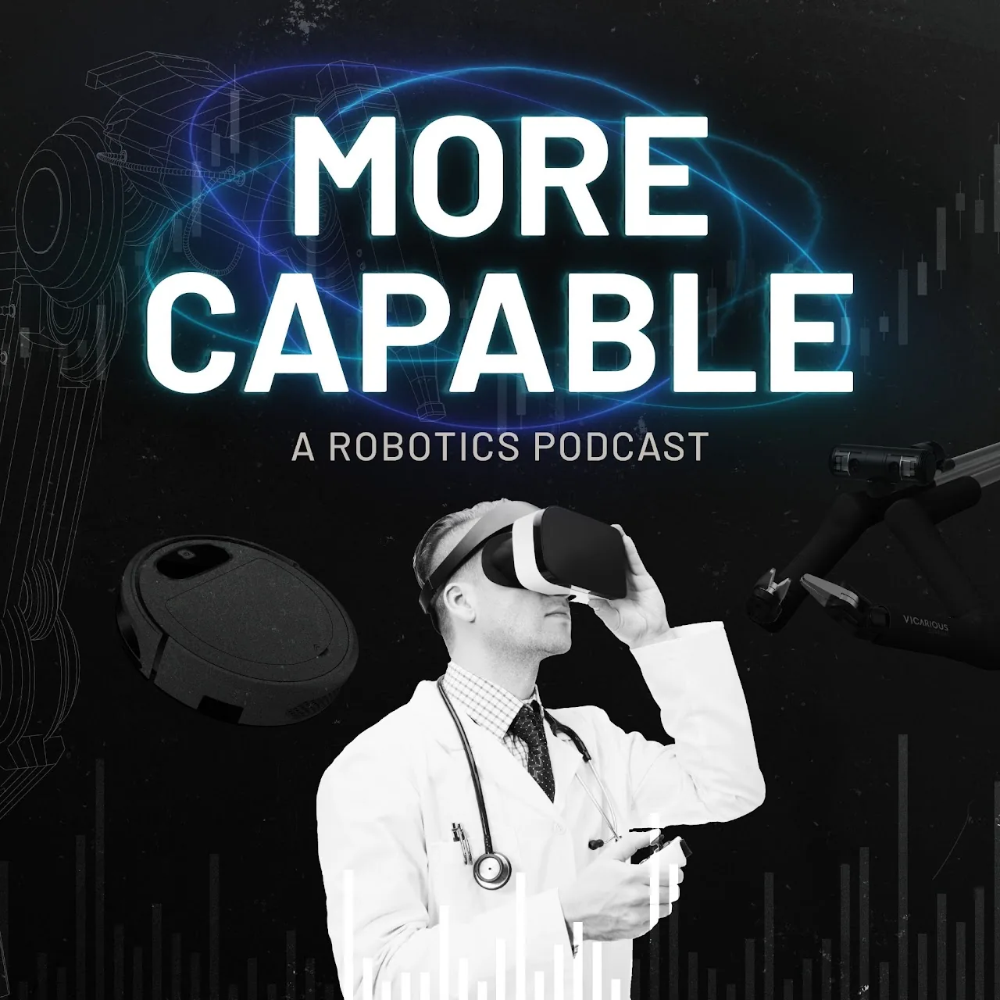
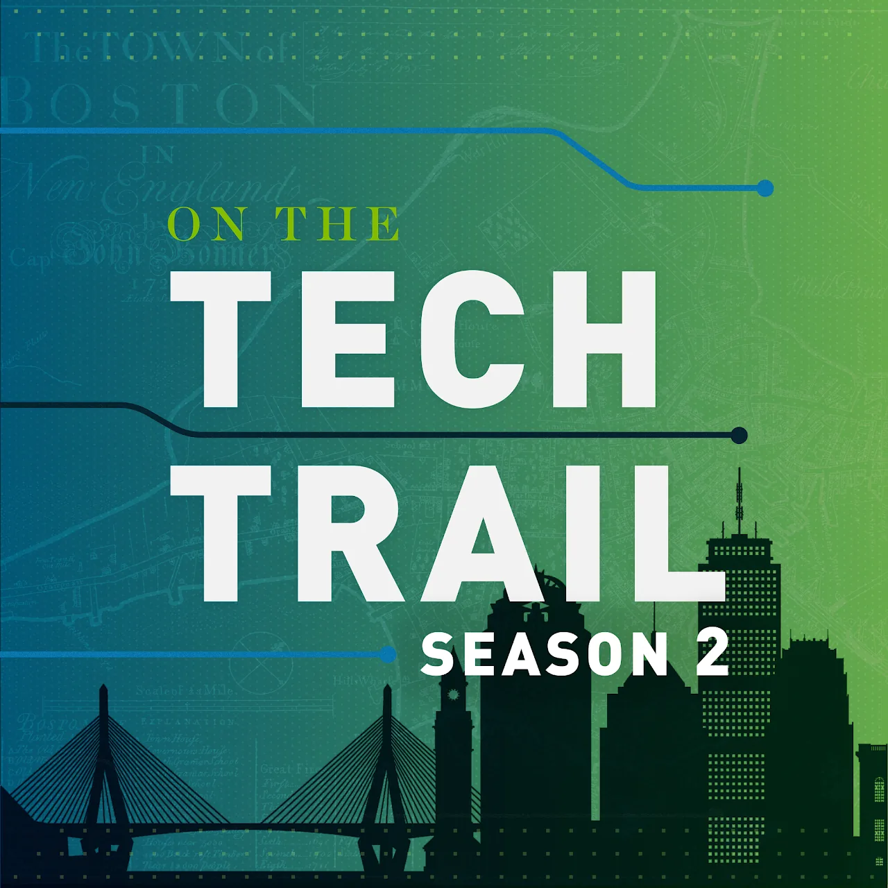
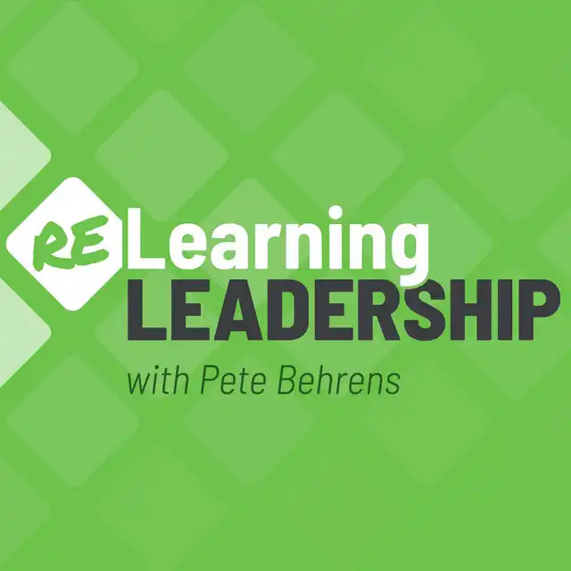
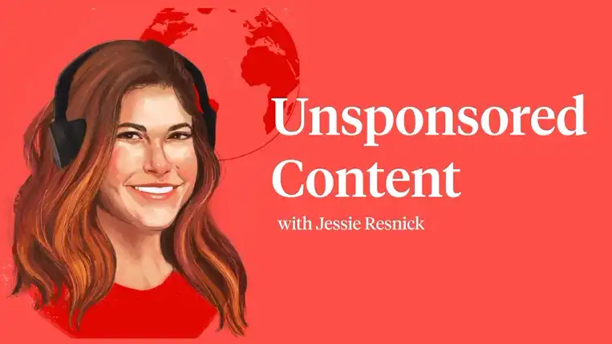

Sheila for Malden
Would your friends let you rope them into a full scale podcast production as first-timers? Mine did!
Format 4-episode limited series
Work
They're sort of magical, aren't they?
Even in the worst media saturation conditions (so far), podcasts maintain a separate, special status owed to a rich history tracing back through radio and public performance. A podcast (well, a good one, at least) is more like eavesdropping than it is like watching television--it piques our curiosity and invites us to lean in and listen. Meanwhile, our hands are free to cook or drive or do laundry.
Podcasts aren't going wind up as the antagonist of a 'Black Mirror' episode, but they might be an effective way to cope with the aftermath of one. From the evocative soundscapes to the niche subjects and even niche-ier personalities, they're the celebration of the teetering intersection between weird and cool. Having come into media from the "V" side of A/V, I thought I'd feel like something was really missing when working in an audio-only format, but I don't. I've actually come to love the podcast genre for all the nuanced ways it doesn't need to rely on the eyes at all.
Some personal favorites of mine (and there seem to be a lot of them now) include 99% Invisible, On the Media, Science Friday, The Last Archive, The Sporkful, Imaginary Worlds, Random Number Generator (Horror Podcast No. 9), & Wait Wait...Don't Tell Me!.
Would your friends let you rope them into a full scale podcast production as first-timers? Mine did!
Format 4-episode limited series

Behold the power of a well-made concept map! When typical document formats just won't get the message across, sometimes it takes a timeline to get the job done.
Format 4-episode first season

Holy Grail of content cross-pollination during a marketing blitz.
Gold · Titan Health Awards 2023
Format 3-part limited series

Boston tech leaders unpack the "Boston Brand Problem"
Format Season 1 (2020) and Season 2 (2021)

Grand Winner, Audio & Podcasts · 2021 NYX Awards
Role Audio engineer

Format Internal company culture series
During my time at Matter Communications, I helped the agency launch its nascent podcasting initiative, standing up and editing 5 shows in our first year and a half: “Freedom Unfinished” for the American Civil Liberties Union (ACLU) of MA, “More Capable” with Vicarious Surgical, “On the Tech Trail” S1 & 2 in partnership with the Massachusetts Technology Leadership Council, “ReLearning Leadership” for Agile Leadership Journey, and “Unsponsored Content” by Xandr. I was responsible for researching questions and initial guest communique, interviewing and recording with over 50 podcast guests remotely using the Riverside platform, transcribing interviews, assembling scripts, and compiling 25-45 min podcast episodes.
Show artwork for Freedom Unfinished, More Capable, On the Tech Trail, (Re)Learning Leadership, and Unsponsored Content was created by others on the Matter Communications team.